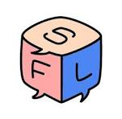

PolicyKit : a no-code Slack integration for community decision-making
Spring 2023
Design system
Information architecture
Product redesign
A project by

The Social Futures Lab ↗
Supported by
 The Metagovernance project ↗
The Metagovernance project ↗
Collaborating with researchers from the University of Washington and the Metagovernance project, I led the redesign project to enhance the usability and flexibility of PolicyKit. I have also designed a complex no-code feature from scratch, enabling users to create and edit policies without writing code.
Context
The admin-user model frequently restricts governance options in online communities. PolicyKit, a research tool, prioritizes user experience and introduces a no-code UI for democratic governance tailored to community needs. I was invited to redesign PolicyKit to enhance its user experience and introduce a new feature: a no-code UI for creating policies.

The homescreen interface before redesign
Goals
User Activation
At project initiation, there was no pre-install introduction, and post-installation, users faced a blank home page. Improving the install and sign-in flow aims to introduce PolicyKit's value, guiding users and eventually decentralizing community organization, as identified in past user interviews.
Unified Information Architecture
The platform's detached actions and objects required users to navigate a cumbersome 'propose action' flow, emphasizing the need for a more streamlined, object-oriented approach in the redesign.
No-code Policy Authoring
PolicyKit initially supported policies written in Python. A key goal of the redesign was to introduce a no-code interface, making policy authoring and editing accessible to all community members.